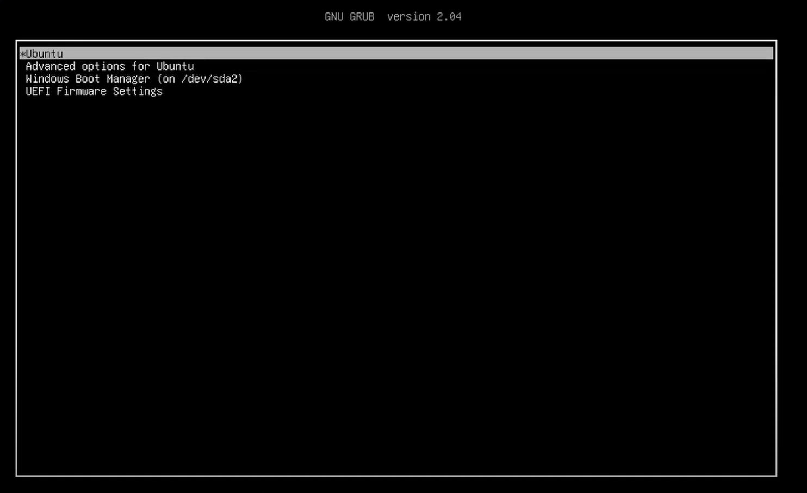

搭建个人深度学习工作站（操作系统篇）
说明：由于是个人使用，我安装的是 Windows + Ubuntu Server 双系统。用 Ubuntu Server 训练，用 Windows 摸鱼。
硬件配置
- 主板：华硕 TUF GAMING B560M-PLUS WIFI
- CPU：Intel i7-11700 @ 2.50GHz 8核16线程
- 内存：英睿达 美光32GB(16Gx2)套装 DDR4 3600MHz
- GPU：NVIDIA RTX 3080Ti
- 硬盘：
- Samsung SSD 980 1TB x 2
- WDC WD20EZBX-00A 2TB
- 电源：长城 猎金部落 额定1100W G11金牌全模
安装过程
这个 YouTube 视频和我的需求完全一致（即先安装 Windows10，然后安装 Ubuntu Server），可作为直接参考。
硬盘分区规划
由于我是安装双系统，因此要事先做好硬盘分区规划。经衡量，决定：
- 一块 1TB 固态盘作为系统盘，分出 670GB 给 Ubuntu，剩下 260GB 给 Windows；
- 另一块 1TB 固态盘作为数据盘（存放数据集），全部给 Ubuntu；
- 2TB 机械硬盘分出 1.5TB 给 Ubuntu 做备份盘（数据集备份），剩下 300GB 给 Windows。
开机自动挂载硬盘
如上文所言，我有一个 1T 固态盘存放数据，因此准备挂载到 /data 下。以此为例，开机自动挂载的步骤为：
使用
lsblk命令查看磁盘分区使用
blkid /dev/xxx查看相应分区的 UUID、TYPE 等在
/etc/fstab文件中添加：1
2# <file system> <mount point> <type> <options> <dump> <pass>
/dev/disk/by-uuid/xxxxxxxxx /data ext4 defaults 0 0事实上，第一个字段可以不用 uuid 而直接写名称（如
/dev/nvme1n1p1），用 uuid 的好处是如果磁盘顺序交换导致名称变了，依然能够挂载上正确的磁盘。
交换启动顺序
在 BIOS boot 中把 Ubuntu 放到 Windows 前面，以通过 Ubuntu 的启动菜单选择要进入的系统，如下图所示：

远程开机——WakeOnLAN
本机安装 ethtool：
1
sudo apt install ethtool -y查看本机网卡接口名称和 MAC 地址：
1
ifconfig -a本机有线网卡接口名为
enp5s0（下面的wol.service中要用），MAC 地址保存在如下行内：1
ether xx:xx:xx:xx:xx txqueuelen 100 (Ethernet)查看本机 WakeOnLAN 状态：
1
sudo ethtool enp5s0 | grep -i "wake" # g 启用，d 未启用本机配置开机启动 ethtool 服务：
编辑
/etc/systemd/system/wol.service文件如下：1
2
3
4
5
6
7
8
9[Unit]
Description=Configure Wake On LAN
[Service]
Type=oneshot
ExecStart=/sbin/ethtool -s INTERFACE wol g //INTERFACE 改为 enp5s0
[Install]
WantedBy=basic.target然后设置开机启动：
1
2
3sudo systemctl daemon-reload
sudo systemctl enable wol.service
sudo systemctl start wol.service
一些小问题
开机时在
A start job is running for Wait for Network to be Configured消息提示下卡 2min经搜索得知这是
systemd-networkd-wait-online服务在检查网络接口，根据手册所述：systemd-networkd-wait-online是一个一次性系统服务(参见 systemd.service(5))，用于等待网络连线成功(可以对外通信)。 默认情况下，它会一直等待到所有被其监视且由 systemd-networkd.service(8) 管理的网络接口连线成功或者超时失败，并且至少有一个连接可以对外通信。由于我在装系统时配置了有线网络，但是暂时没有连接，所以系统会一直检查直至超时。
禁用 cloud-init
1
sudo touch /etc/cloud/cloud-init.disabled
后续维护
连接新网络（有线 / WiFi）
参考资料：
https://blog.csdn.net/u014752296/article/details/127784922
https://linuxconfig.org/ubuntu-22-04-connect-to-wifi-from-command-line
https://blog.csdn.net/hanweiwallywang/article/details/122646206
早期的 Ubuntu 用的是 /etc/network/interface 文件来配置网络，从 17.10 版本开始使用 NetPlan，通过 /etc/netplan/ 下的 yaml 文件来配置网络，非常方便。
用
ifconfig或ls /sys/class/net命令查看有线/无线接口名称，比如我的有线接口是enp5s0，无线接口是wlo1；[WiFi] [Optional] 搜索可连接的 WiFi，找要连接的 WiFi 名称（SSID）；
1
sudo iw dev wlan scan # wlan 换成自己的无线接口名称当然，如果你本来就知道 WiFi 的名称可跳过这一步。
打开
/etc/netplan/xxxxxxxxxxxx.yaml配置文件，如果之前在系统安装过程中已经配置有网络，文件中应该会有当时配置的内容。以连接新 WiFi 为例，若使用 DHCP 动态获取 IP，则添加内容（或覆盖原来内容）：
1
2
3
4
5
6
7
8network:
version: 2
wifis:
w1o1:
access-points:
"xxxxxxxx": # WiFi Name (SSID)
password: "xxxxxxxxx"
dhcp4: true如果使用静态 IP，则添加内容（或覆盖原来内容）：
1
2
3
4
5
6
7
8
9
10
11
12network:
version: 2
wifis:
w1o1:
access-points:
"xxxxxxxx": # WiFi Name (SSID)
password: "xxxxxxxxx"
dhcp4: no
addresses: ["xxxxxxxx/xx"] # IP地址/子网掩码位数
gateway4: "xxxxxxxxx" # 网关
nameservers:
addresses: ["xxxxxxxx"] # 域名解析服务器Debug 检查配置格式是否有错：
1
sudo netplan --debug try若无错误，应用新的配置：
1
sudo netplan applyifconfig或ip a查看配置结果，如果配置成功应该能看到 IP 地址。
添加新硬盘
操作和我们安装系统时设置开机自动挂载硬盘是一样的。